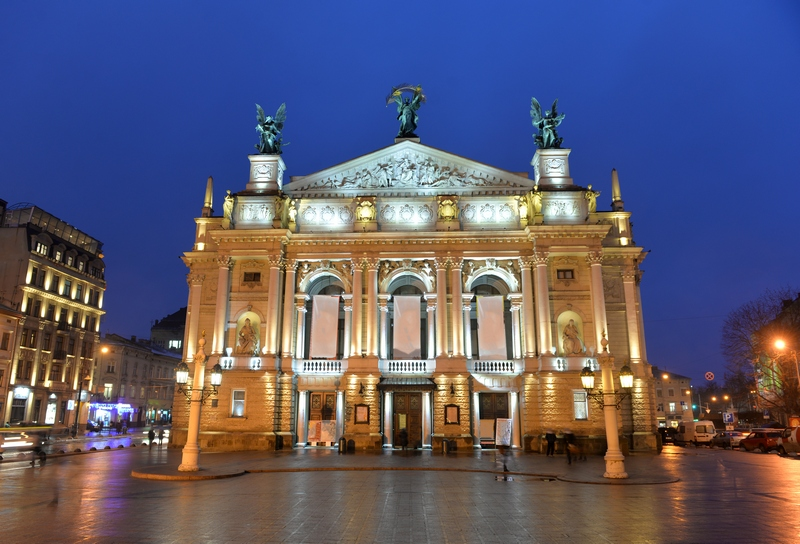

Місце народження: 25 жовтня, 2006 року, м. Київ
Гобі:
Улюблені фільми:
Львів — це найбільше місто на заході України, адміністративний центр Львівської області та культурна столиця країни. Місто заснував близько 1256 року король Данило Галицький і назвав на честь свого сина Лева.
